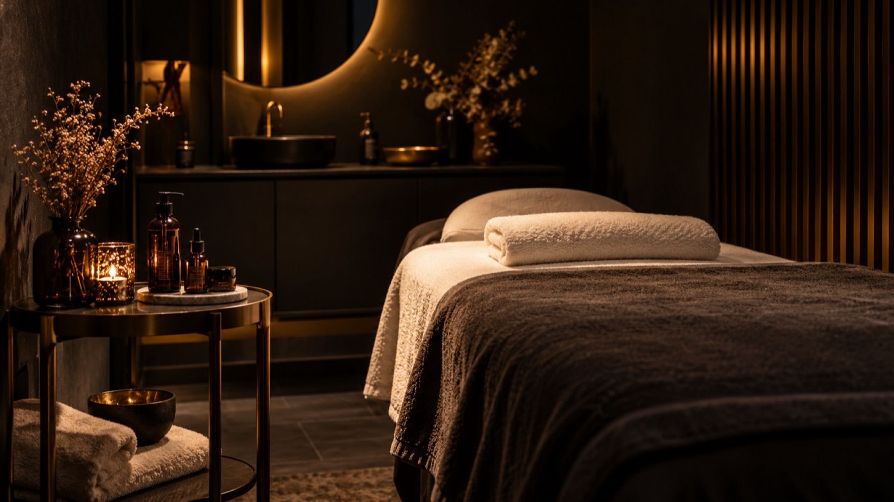
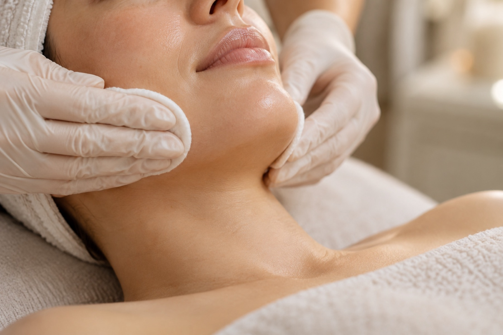
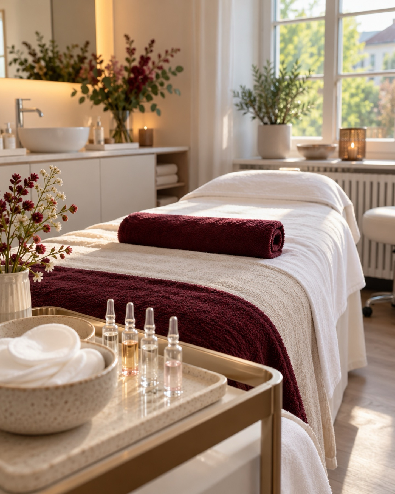
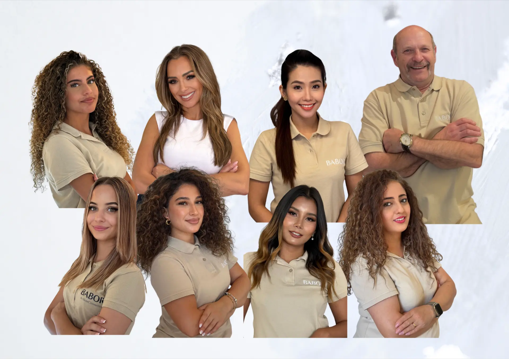

HopeCosmetics DaySpa
Hohenzollernstraße 2990475 Nürnberg
Mo bis Fr 10 bis 19 Uhr
Sa 10 bis 18 Uhr

Nürnberg
Behandlungen mit Zeit, Ruhe und Fachwissen. In zwei Studios in Nürnberg.
Termin online buchenLeistungen
Innovative Hautverfeinerung für ein ebenmäßiges, jugendliches Hautbild.
Sanftes Entfernen feiner Härchen und abgestorbener Hautschüppchen für einen frischen, glatten Teint.
Tiefenwirksame Massagen für vollkommene Entspannung von Körper und Geist.
Wir starten mit Ihrer Haut: Was stört, woher kommt es und welches Konzept bringt sichtbare Ergebnisse.
Aus professioneller Hautanalyse und Wirkstoffkonzepten entsteht Ihr individueller Plan, präzise und fachlich fundiert.
Individuell abgestimmte BABOR Facials für strahlende, gesunde Haut, von Hydration bis Anti-Aging.
Galerie


Über Sh'ree Fruth
Sh'ree Fruth gründete HopeCosmetics 2007 und berät seither mit einem klaren Anspruch: Sie sagt Ihnen ehrlich, was Ihre Haut braucht. Heute kümmern sich acht Hautspezialistinnen und -spezialisten um Ihre Haut. HopeCosmetics ist offizieller BABOR Premium Partner.
„Diese Auszeichnung war nie mein Endziel.“

Ablauf Ihres Termins
Wir nehmen uns Zeit für ein Gespräch und schauen uns Ihre Haut genau an.
Ruhig, gründlich und auf Ihre Haut abgestimmt, mit BABOR Wirkstoffen und modernen Geräten.
Sie gehen mit klaren Empfehlungen, die zu Ihrem Alltag und Ihrer Haut passen.
Endlich wurde mir erklärt, warum meine Haut so spannt. Ich bin mit einem Plan nach Hause gegangen, der funktioniert.
Sehr ehrliche Beratung, kein Verkaufsdruck. Man merkt, dass hier Erfahrung dahintersteckt.
Ruhige Atmosphäre und ein Team, das sich wirklich Zeit nimmt. Ich komme gern wieder.
Häufige Fragen
Kommen Sie am besten ungeschminkt oder mit wenig Make-up. Bringen Sie gern Ihre aktuelle Pflege mit und sagen Sie uns, welche Anliegen Sie haben und ob Sie Allergien oder Hautempfindlichkeiten kennen.
Das hängt von der Behandlung ab. Bei der Online-Buchung sehen Sie die Dauer der jeweiligen Behandlung und können sich entsprechend Zeit einplanen.
Wir erklären Ihnen nach jeder Behandlung, wie Sie Ihre Haut in den nächsten Tagen pflegen und schützen. Das gehört zu jedem Termin dazu.
Ja. Bis 24 Stunden vor dem Termin ist die Absage kostenfrei, am einfachsten online über Ihre Buchung oder telefonisch.
Kontakt und Anfahrt
Mo bis Fr 10 bis 19 Uhr
Sa 10 bis 18 Uhr
Gutscheine erhalten Sie direkt im Studio oder über unsere Website.
Danke, wir melden uns.